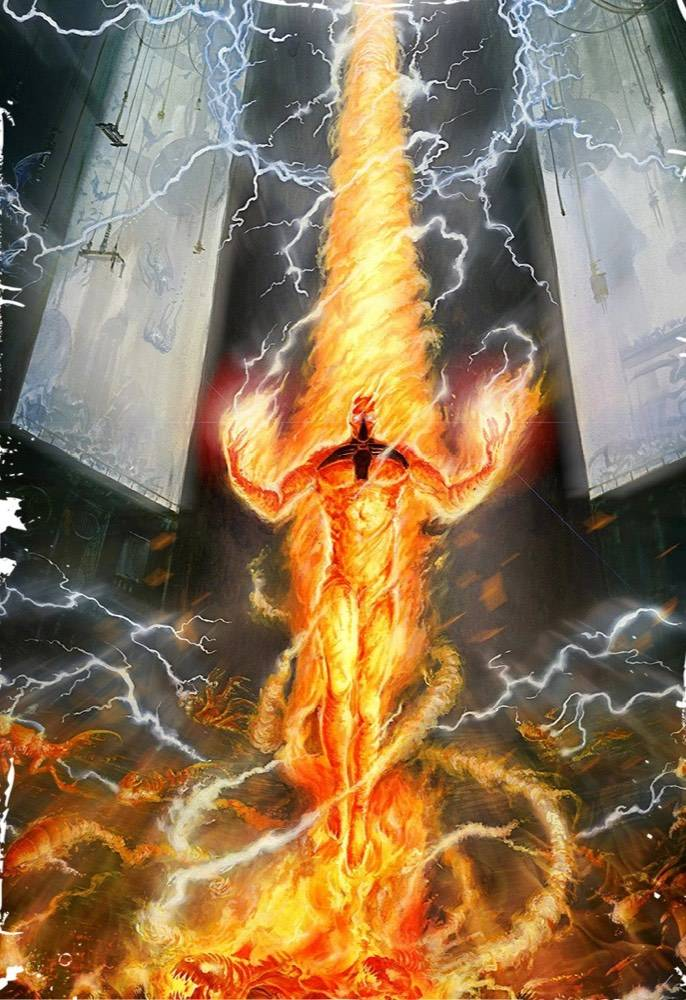

C'tan
| C'tan | |
|---|---|
 A C'tan shard freed from its tesseract prison, from an Ordo Xenos pict-record Artwork © Games Workshop | |
| Classification | Xenos; star-energy beings in bodies of necrodermis |
| Origin | The young universe; fed on stars |
| Known C'tan | The Deceiver (Mephet'ran); the Nightbringer (Aza'gorod); the Void Dragon (Mag'ladroth); the Outsider; the Flayer (Llandu'gor, destroyed); others |
| Servants | The Necrons (until the revolt) |
| Enemies | The Old Ones, the Aeldari and their gods; later the Necrons |
| Fate | Shattered into shards by the Necrons, c. 60,000,000 years before M41 (estimated); shards bound in tesseract labyrinths |
The C'tan, also called the Star Gods, are beings of living energy who once fed on the light of stars and who, given bodies of living metal, became the masters of the Necrontyr. They are the most powerful xenos entities known to the Imperium outside the Warp. In the War in Heaven, some sixty million years before the 41st millennium, they offered the Necrontyr victory over the Old Ones and immortality, and in return fed on their souls.[1]
The Necrons rose against them after the Old Ones fell. Led by the Silent King Szarekh, they broke the C'tan into thousands of fragments, the C'tan shards, and locked them in tesseract labyrinths. In the 41st and 42nd millennia, Necron lords have used these shards as weapons in their wars, and Imperial forces have met them on many battlefields.[1][2]
Nature
[edit]The C'tan were born in the early universe as vast fields of energy that lived in the hearts of stars and fed on them. They had no bodies and almost no awareness of the mortal world until the Necrontyr built them forms of necrodermis, a living metal, through which they could act in the material realm. Once embodied, they took on the hungers and personalities that the Necrontyr expected of gods. They are not of the Warp, and the Warp's powers have little hold on them, but they are hungry for the life-energy of mortals, which they consume.[1][3]
History
[edit]The War in Heaven
[edit]The first C'tan to take a body, the one later called the Deceiver, came to the Necrontyr in the reign of Szarekh, and through it the Necrontyr learned of others. The C'tan promised the Necrontyr immortality and gave them the technology of biotransference, which moved the race from flesh into living metal. The C'tan fed on the souls the process released. With the C'tan and the new Necrons fighting together, the Old Ones were driven to defeat.[1]
Aeldari myth records the C'tan fighting the Aeldari gods. Khaine is said to have fought the Nightbringer, and the wound that the god of death left in the Aeldari soul is held to be why the mortal races fear death. Cegorach, the Laughing God, is said to have tricked the Deceiver and fled from the C'tan with the secrets that the Harlequins still keep.[3]
The revolt
[edit]The C'tan began to quarrel among themselves. Llandu'gor, the Flayer, was destroyed by its fellows, and the others grew hungrier. Szarekh, who now regretted the bargain, led his people in a revolt. The Necrons used weapons made to kill gods and broke each C'tan into many shards. These were sealed in tesseract labyrinths, prisons that hold a shard in another dimension. The Void Dragon, Mag'ladroth, is said to have been left sleeping on the world now called Mars, beneath the Noctis Labyrinthus; the Adeptus Mechanicus denies this account.[1][4]
The shards
[edit]Each shard holds only a fraction of a C'tan's power, but even a fraction is enough to tear apart armies. The shards are kept in check by control systems built by the Crypteks, and a Necron lord who commands one can unleash it against an enemy. Imperial reports from the late 41st millennium and the Era Indomitus record shards of the Deceiver, the Nightbringer and the Void Dragon on many fronts. In some cases the Necrons have fused several shards into a larger being, called by the Ordo Xenos a Transcendent C'tan, which is still more dangerous and harder to bind.[1][2]

The Necron collector Trazyn the Infinite keeps shards in his galleries on Solemnace, and the escape of a shard is one of the dangers the Imperium has faced on Necron worlds such as Damnos.[1]
The known C'tan
[edit]| Name | Known as | Fate (Necron and Imperial accounts) |
|---|---|---|
| Mephet'ran | The Deceiver, the Messenger | Shattered; shards active in M41 and M42 |
| Aza'gorod | The Nightbringer | Shattered; shards active in M41 and M42 |
| Mag'ladroth | The Void Dragon | Said to sleep beneath Mars; shards active elsewhere |
| Unknown | The Outsider | Driven mad; imprisoned, by some accounts in the heart of a black hole |
| Llandu'gor | The Flayer | Destroyed by the other C'tan during the war |
Timeline
[edit]| Date (estimated) | Event |
|---|---|
| Early universe | The C'tan feed on stars |
| c. 65,000,000 years before M41 | The Necrontyr give the C'tan bodies; biotransference |
| c. 60,000,000 years before M41 | The Old Ones fall; the Necrons shatter the C'tan |
| Late M41 | Shards used by awakened dynasties against the Imperium |
| Era Indomitus (from 999.M41) | Transcendent C'tan and many shards reported on Necron fronts |
See also
[edit]References
[edit]- ^ a b c d e f g Haley, Guy. Belisarius Cawl: The Great Work (novel). Black Library, Chs. 8, 9, 23, 26. Counter, Ben. The World Engine (novel). Black Library, Chs. 3, 6, 9, 15.
- ^ a b Codex: Necrons (8th Edition), pp. 69, 100, 113. Games Workshop. McNeill, Graham. Mechanicum (novel). Black Library.
- ^ a b McNeill, Graham. The Ultramarines Omnibus (novel). Black Library. Codex: Necrons (7th Edition) (Digital Edition), pp. 8-9, 159-162, 178-179. Games Workshop.
- ^ Apocalypse (6th Edition), pg. 174. Games Workshop. Apocalypse: War Zone Damnos (6th Edition), pp. 20-21, 24, 35. Games Workshop.